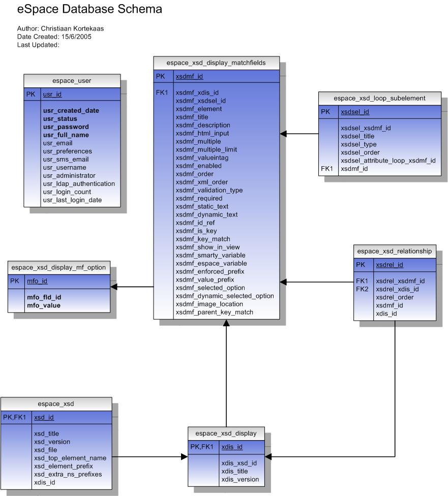

Design > Persistence
Release Information
| Project: | eSpace |
|---|---|
| Internal Release Number: | 0.1.0 |
| Related Documents: |
LINKS TO RELEVANT STANDARDS
LINKS TO OTHER DOCUMENTS
|
Overview
TODO: Answer the questions below to help you design needed persistence
features. Some example text is provided. Add or delete text as
needed.
- What are the most important facts that a developer should know about persistent data storage in this system?
- The FEDORA backend system manages the persistance storages of digital objects for eSpace. eSpace has its own MySQL database to handle eSpace workflow and document type mappings, but the actual digital objects are all stored in Fedora.
- What are the ranked goals for persistence in this system?
Central Database
- What is the logical database design?
- The eSpace logical database design is described in this UML model. (Here is the Visio 2003 source diagram).

- What are the physical tables and views?
- The eSpace specific physical database design is described in this UML model. (Here is the Visio 2003 source diagram).
- How will objects in the application be stored in the database?
- Objects are stored in the FEDORA system. See here for details on the Fedora digital object model.
- What database access controls will be used?
- Access to the FEDORA digital repository is based on IP and Fedora administrator username and password. The eSpace web application connects to the FEDORA system via exposed webservices restricted by these IP and username/password restrictions. eSpace web application security then controls what users can see.
- Is this application's central database accessible to other applications?
- The FEDORA backend database can only be accessed by the eSpace web application or by system administrators via the Fedora Administrator GUI or the exposed web services. The database Fedora uses is MySQL so it can also be accessed directly by system adminsitrators with appropriate access, but all administration should be possible either through eSpace or the Fedora Admin client GUI.
File Storage
- What data needs to be stored in files?
- Fedora stores all 'Managed Content' in files in its own file management structure. Managed content is non-text/xml eg PDFs, images, sound files etc. It can be configured to store this data in blobs in MySQL or Oracle databases but the managed file system approach is more efficient. The managed files are stored on a samba share to a Storage Area Network mappe drive with Terabytes of disk space.
Persistence Mechanisms Checklist
- Reliability: To what extent has this been achieved?
- 2-4 SENTENCES
- Capacity: To what extent has this been achieved?
- The Storage Area Network has a huge capacity for digital object storage. It can also be extended as need arises.
- Security: To what extent has this been achieved?
- 2-4 SENTENCES
- Performance: To what extent has this been achieved?
- 2-4 SENTENCES
- Interoperability: To what extent has this been achieved?
- 2-4 SENTENCES
- Has the persistence design been communicated to the development team and other stakeholders?
- Yes, everyone understands. Feedback is welcome.
Company Proprietary
Copyright © 2003-2004 Jason Robbins. All rights reserved. License terms.
Retain this copyright statement whenever this file is used as a
template.